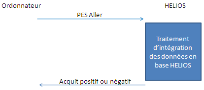

Les données à échanger entre ordonnateurs et HELIOS sont véhiculées sous forme de fichiers informatique.
Un ordonnateur a le choix, pour effectuer la transmission et la réception de données et de documents électroniques, de recourir soit à un dispositif de transmission mis en œuvre par un opérateur «tiers de transmission», soit à la passerelle de transmission sécurisée d'Hélios. L'ordonnateur peut assumer directement la fonction de tiers de transmission en mettant en oeuvre un dispositif de transmission. Le recours à un dispositif de transmission par un tiers de transmission est recommandé dans la logique d'interopérabilité des échanges entre administrations.
La description de l'infrastructure de transfert ainsi que la définition des canaux sont en dehors du cadre de ce document.
Les fichiers échangés entre l'ordonnateur et HELIOS sont construits selon la syntaxe XML, selon des dispositions décrites dans ce document.
Le PES n'introduit aucun changement par rapport à l'existant dans les procédures d'échanges utilisant un support de type disquette.
Nous décrivons ci-dessous les flux d'échanges associés à la transmission en mode fil (synchrone ou asynchrone).
La figure numéro 1 présente le modèle général d'échanges de données entre un ordonnateur et le système HELIOS (intégration réussie), dans le cadre d'une transmission en mode fil (synchrone ou asynchrone) entre l'ordonnateur et HELIOS.
| Figure 1 |
|  |
Le message PES Aller est transmis par l'ordonnateur à HELIOS selon la règle d'acheminement sélectionnée entre l'ordonnateur et le comptable. Le fichier correspondant peut regrouper des objets comptables de domaines fonctionnels distincts pour une collectivité budget donnée.
La zone d'échange HELIOS exerce un contrôle d'acceptabilité sur le fichier reçu. Ce contrôle porte sur les éléments suivants :
Lorsque le fichier a été traité par le guichet xml, HELIOS délivre vers l'émetteur du fichier un message d'acquittement des données ordonnateur par ElementAcquit (bordereau, PJ) que l'ElementAcquit soit intégré ou non dans Hélios. Le mode de délivrance de l'acquit est fonction du type de canal d'acheminement. Il garantit à l'ordonnateur que les données véhiculées par le flux seront en visibilité du comptable.
Dans le cas des transmissions asynchrone, les messages d'acquittement sont transportés dans des fichiers séparés selon des syntaxes XML décrites.
Dans le cas d'une transmission synchrone (formulaire HTML), l'acquit figure dans le statut de retour de la requête HTML. Il ne nécessite pas un message séparé.
Les retours d'information vers l'ordonnateur sont transmis (cf. figure 2) via des messages PES Retour selon la règle d'acheminement sélectionnée entre l'ordonnateur et le comptable. Le mode de délivrance de ce message est fonction du type de canal d'acheminement (synchrone, asynchrone)
| Figure 2 |
La version 2 du PES ne met pas en œuvre des fonctionnalités de cryptage applicatif des données comptables échangées. Si nécessaire, la confidentialité est supposée assurée par l'architecture de transfert.
Le fichier PES_V2 permet de véhiculer des pièces justificatives chiffrées.
La version 2 du PES intègre des fonctionnalités de signature électronique portant sur :
La génération des signatures est du ressort de l'ordonnateur.